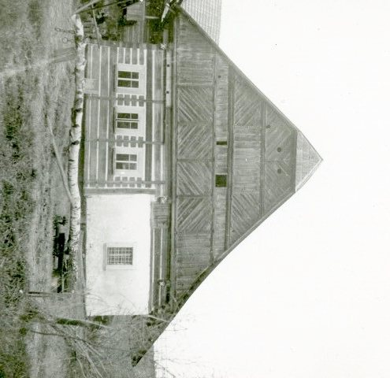
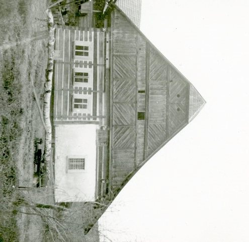
 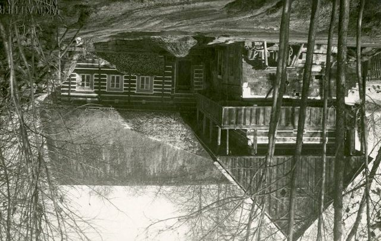
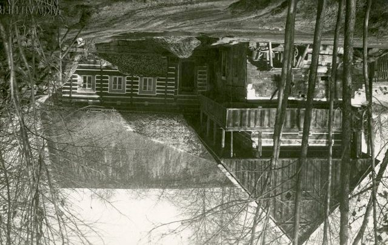
 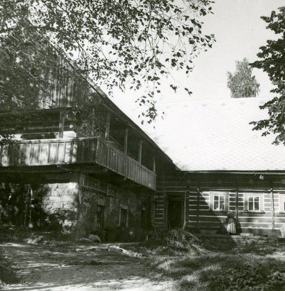
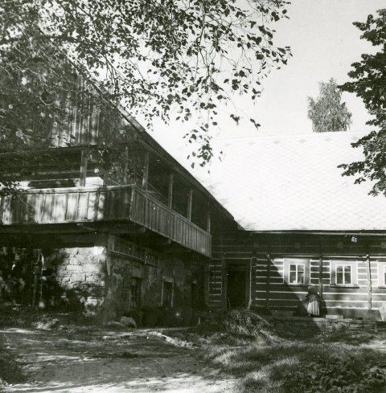
 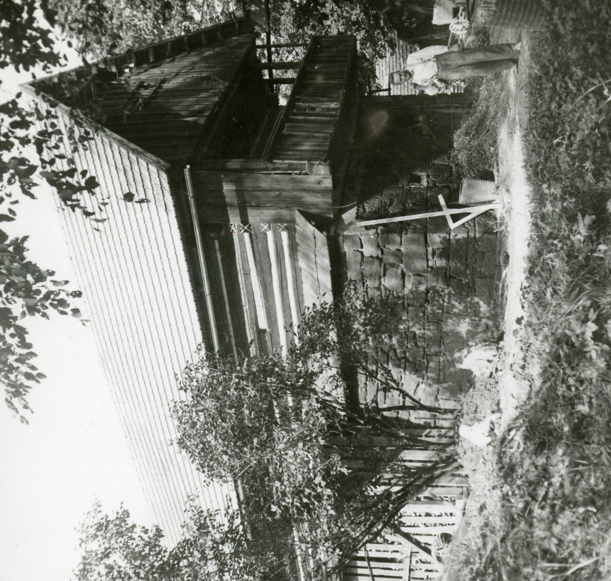
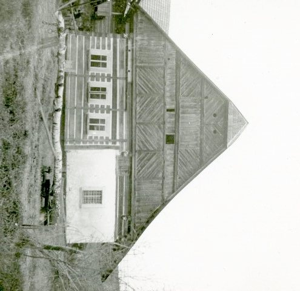
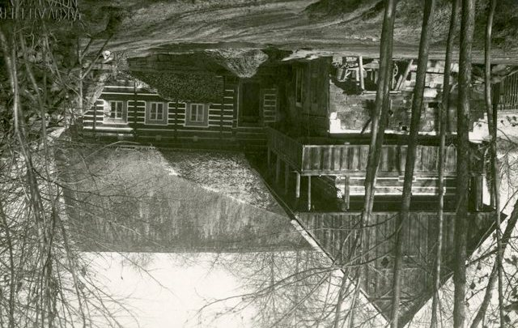
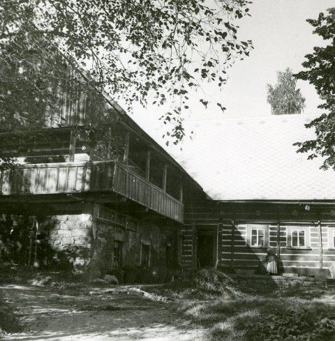
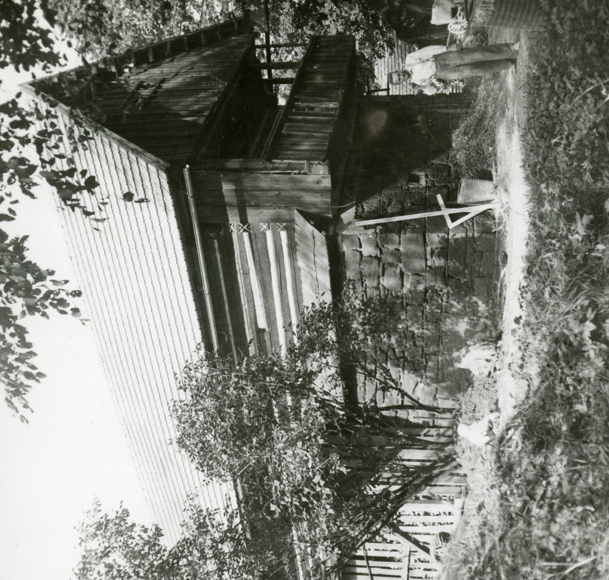
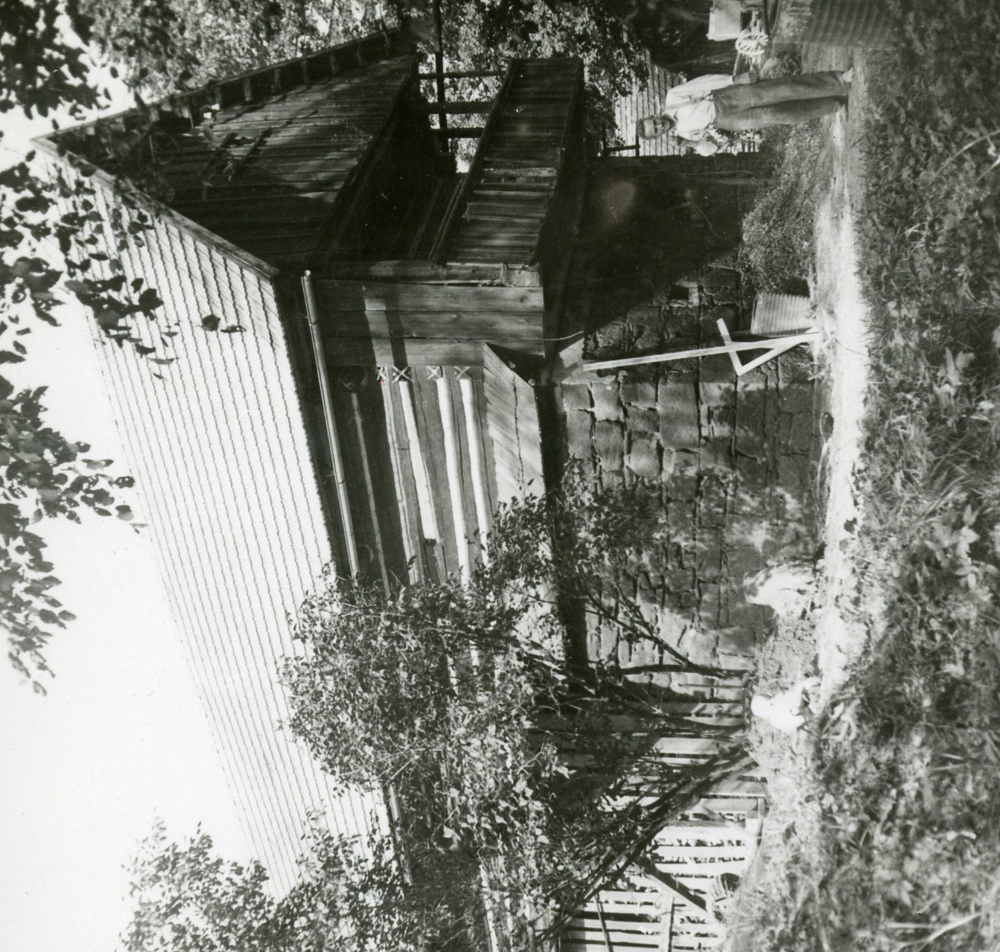
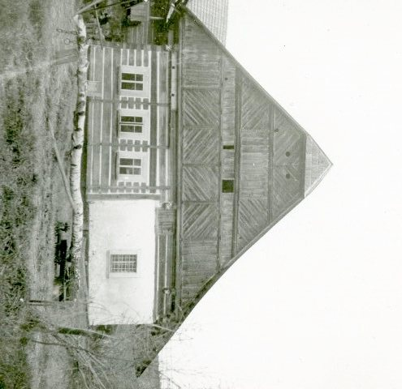
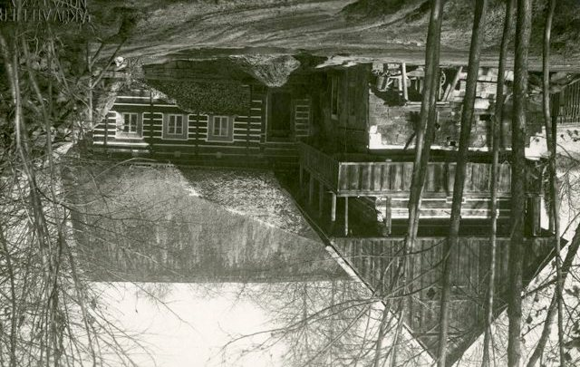
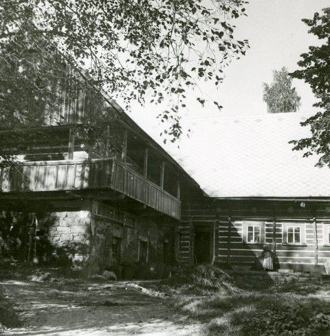
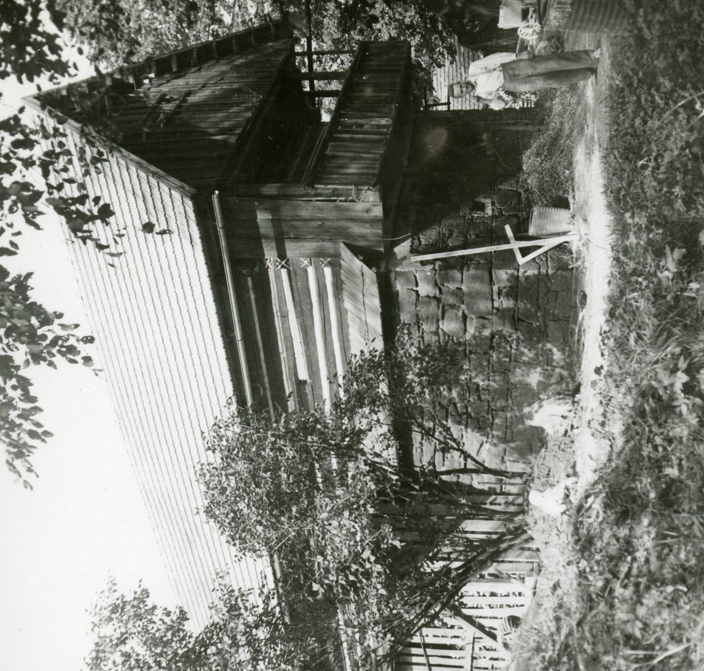
Objekt roubeného mlýna je situován do písmene L. Skládá se z přízemního hlavního stavení orientovaného štítovou stranou k východu a patrového hospodářského stavení orientovaného štítovou stranou k jihu. Podoba mlýna vyobrazená v plánech patrně pochází dle datace na překladu vstupu do chléva z roku 1783. Dobová podoba stavení byla vymodelována dle plánové dokumentace, kterou vytvořil Ing. Vodseďálek. Dále byl využit Evidenční list nemovité kulturní památky pořadové číslo 2652. K dispozici bylo dále pár dobových fotografií. Digitální model byl vytvořen v programu SketchUp.